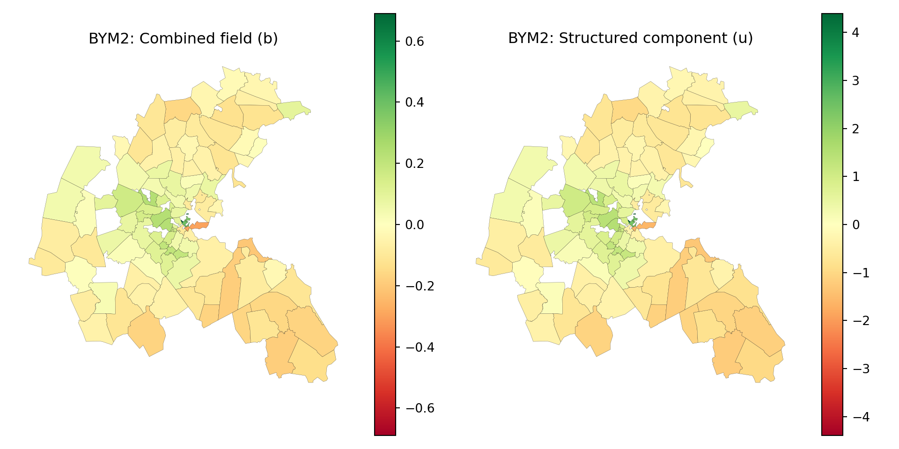
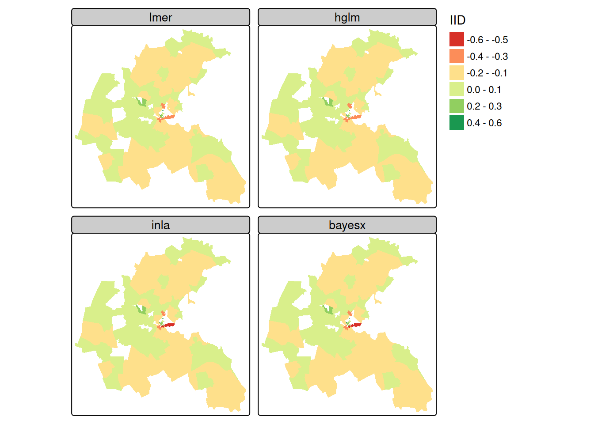
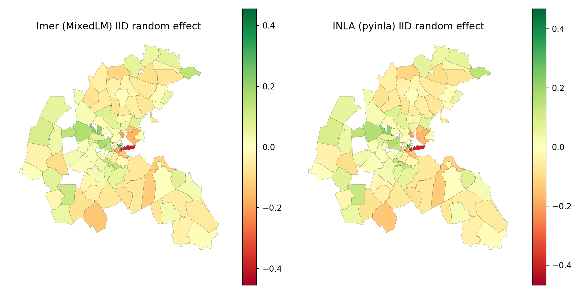
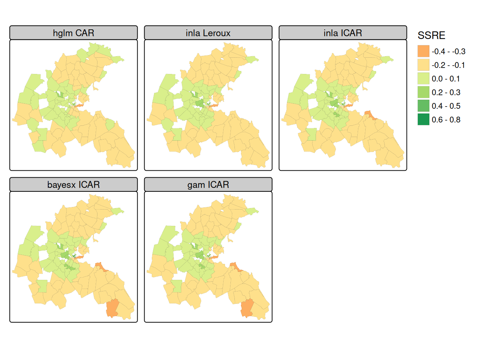
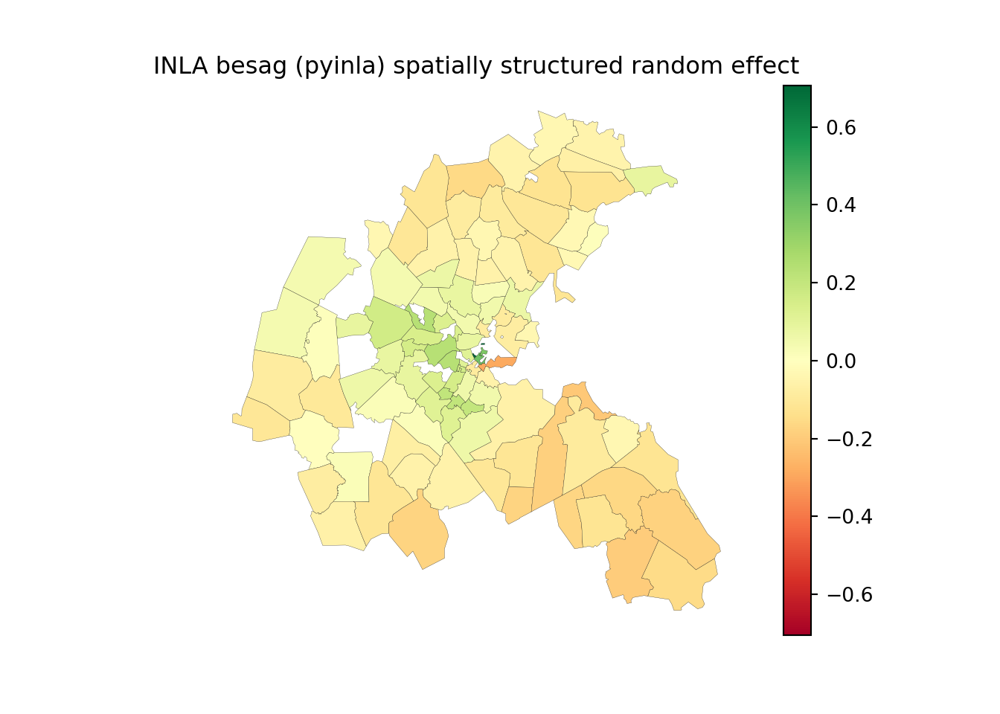

16 Spatial Regression
Even though it may be tempting to focus on interpreting the map pattern of an areal support response variable of interest, the pattern may largely derive from covariates (and their functional forms), as well as the respective spatial footprints of the variables in play. Spatial autoregressive models in two dimensions began without covariates and with clear links to time series (Whittle 1954). Extensions included tests for spatial autocorrelation in linear model residuals, and models applying the autoregressive component to the response or the residuals, where the latter matched the tests for residuals (Cliff and Ord 1972, 1973). These “lattice” models of areal data typically express the dependence between observations using a graph of neighbours in the form of a contiguity matrix.
Of course, handling a spatial correlation structure in a generalised least squares model or a (generalised) linear or non-linear mixed effects model such as those provided in the nlme and many other packages does not have to use a graph of neighbours (Pinheiro and Bates 2000). These models are also spatial regression models, using functions of the distance between observations, and fitted variograms to model the spatial autocorrelation present; such models have been held to yield a clearer picture of the underlying processes (Wall 2004), building on geostatistics. For example, the glmmTMB package successfully uses this approach to spatial regression (Brooks et al. 2017). Here we will only consider spatial regression using spatial weights matrices.
16.1 Markov random field and multilevel models
There is a large literature in disease mapping using conditional autoregressive (CAR) and intrinsic CAR (ICAR) models in spatially structured random effects. These extend to multilevel models, in which the spatially structured random effects may apply at different levels of the model (Bivand et al. 2017). In order to try out some of the variants, we need to remove the no-neighbour observations from the tract level, and from the model output zone aggregated level, in two steps as reducing the tract level induces a no-neighbour outcome at the model output zone level. Many of the model estimating functions take family arguments, and fit generalised linear mixed effects models with per-observation spatial random effects structured using a Markov random field representation of relationships between neighbours. In the multilevel case, the random effects may be modelled at the group level, which is the case presented in the following examples.
We follow Gómez-Rubio (2019) in summarising Pinheiro and Bates (2000) and McCulloch and Searle (2001) to describe the mixed-effects model representation of spatial regression models. In a Gaussian linear mixed model setting, a random effect \(u\) is added to the model, with response \(Y\), fixed covariates \(X\), their coefficients \(\beta\) and error term \(\varepsilon_i \sim N(0, \sigma^2), i=1,\dots, n\):
\[ Y = X \beta + Z u + \varepsilon \] \(Z\) is a fixed design matrix for the random effects. If there are \(n\) random effects, it will be an \(n \times n\) identity matrix if instead the observations are aggregated into \(m\) groups, so with \(m < n\) random effects, it will be an \(n \times m\) matrix showing which group each observation belongs to. The random effects are modelled as a multivariate Normal distribution \(u \sim N(0, \sigma^2_u \Sigma)\), and \(\sigma^2_u \Sigma\) is the square variance-covariance matrix of the random effects.
A division has grown up, possibly unhelpfully, between scientific fields using CAR models (Besag 1974), and simultaneous autoregressive models (SAR) (Ord 1975; Hepple 1976). Although CAR and SAR models are closely related, these fields have found it difficult to share experience of applying similar models, often despite referring to key work summarising the models (Ripley 1981, 1988; Cressie 1993). Ripley gives the SAR variance as (Ripley 1981, 89), here shown as the inverse \(\Sigma^{-1}\) (also known as the precision matrix):
\[ \Sigma^{-1} = [(I - \rho W)'(I - \rho W)] \]
where \(\rho\) is a spatial autocorrelation parameter and \(W\) is a non-singular spatial weights matrix that represents spatial dependence. The CAR variance is:
\[ \Sigma^{-1} = (I - \rho W) \] where \(W\) is a symmetric and strictly positive definite spatial weights matrix. In the case of the intrinsic CAR model, avoiding the estimation of a spatial autocorrelation parameter, we have:
\[ \Sigma^{-1} = M = \mathrm{diag}(n_i) - W \] where \(W\) is a symmetric and strictly positive definite spatial weights matrix as before and \(n_i\) are the row sums of \(W\). The Besag-York-Mollié model includes intrinsic CAR spatially structured random effects and unstructured random effects. The Leroux model combines matrix components for unstructured and spatially structured random effects, where the spatially structured random effects are taken as following an intrinsic CAR specification:
\[ \Sigma^{-1} = [(1 - \rho) I_n + \rho M] \] References to the definitions of these models may be found in Gómez-Rubio (2020), and estimation issues affecting the Besag-York-Mollié and Leroux models are reviewed by Gerber and Furrer (2015).
More recent books expounding the theoretical bases for modelling with areal data simply point out the similarities between SAR and CAR models in relevant chapters (Gaetan and Guyon 2010; Van Lieshout 2019); the interested reader is invited to consult these sources for background information.
Boston house value dataset
Here we shall use the Boston housing dataset, which has been restructured and furnished with census tract boundaries (Bivand 2017). The original dataset used 506 census tracts and a hedonic model to try to estimate willingness to pay for clean air. The response was constructed from counts of ordinal answers to a 1970 census question about house value. The response is left- and right-censored in the census source and has been treated as Gaussian. The key covariate was created from a calibrated meteorological model showing the annual nitrogen oxides (NOX) level for a smaller number of model output zones. The numbers of houses responding also varies by tract and model output zone. There are several other covariates, some measured at the tract level, some by town only, where towns broadly correspond to the air pollution model output zones.
We can start by reading in the 506 tract dataset from spData (Bivand et al. 2022), and creating a contiguity neighbour object and from that again a row standardised spatial weights object.
import geopandas as gpd
boston_506 = gpd.read_file("data/boston_tracts.gpkg")If we examine the median house values, we find that those for censored values have been assigned as missing, and that 17 tracts are affected.
table(boston_506$censored)
#
# left no right
# 2 489 15boston_506["censored"].value_counts()
# censored
# no 489
# right 15
# left 2
# Name: count, dtype: int64summary(boston_506$median)
# Min. 1st Qu. Median Mean 3rd Qu. Max. NAs
# 5600 16800 21000 21749 24700 50000 17boston_506["median"].describe()
# count 489.000000
# mean 21748.875256
# std 7883.387009
# min 5600.000000
# 25% 16800.000000
# 50% 21000.000000
# 75% 24700.000000
# max 50000.000000
# Name: median, dtype: float64Next, we can subset to the remaining 489 tracts with non-censored house values, and the neighbour object to match. The neighbour object now has one observation with no neighbours.
boston_506$CHAS <- as.factor(boston_506$CHAS)
boston_489 <- boston_506[!is.na(boston_506$median),]
nb_q_489 <- spdep::poly2nb(boston_489)
# Warning in spdep::poly2nb(boston_489): some observations have no neighbours;
# if this seems unexpected, try increasing the snap argument.
# Warning in spdep::poly2nb(boston_489): neighbour object has 3 sub-graphs;
# if this sub-graph count seems unexpected, try increasing the snap argument.
lw_q_489 <- spdep::nb2listw(nb_q_489, style = "W",
zero.policy = TRUE)boston_506["CHAS"] = boston_506["CHAS"].astype("category")
boston_489 = boston_506[boston_506["median"].notna()].reset_index(drop=True)
# libpysal represents no-neighbour polygons as isolates automatically,
# so no explicit zero.policy equivalent is needed
nb_q_489 = graph.Graph.build_contiguity(boston_489, rook=False)
lw_q_489 = nb_q_489.transform("r")The NOX_ID variable specifies the upper-level aggregation, letting us aggregate the tracts to air pollution model output zones. We can create aggregate neighbour and row standardised spatial weights objects, and aggregate the NOX variable taking means, and the CHAS Charles River dummy variable for observations on the river. Here we follow the principles outlined in Section 5.3.1 for spatially extensive and intensive variables; neither NOX nor CHAS can be summed, as they are not count variables.
agg_96 <- list(as.character(boston_506$NOX_ID))
boston_96 <- aggregate(boston_506[, "NOX_ID"], by = agg_96,
unique)
nb_q_96 <- spdep::poly2nb(boston_96)
lw_q_96 <- spdep::nb2listw(nb_q_96)
boston_96$NOX <- aggregate(boston_506$NOX, agg_96, mean)$x
boston_96$CHAS <-
aggregate(as.integer(boston_506$CHAS)-1, agg_96, max)$xboston_506["NOX_ID"] = boston_506["NOX_ID"].astype(str)
boston_96 = boston_506.dissolve(by="NOX_ID",
as_index=False)[["NOX_ID", "geometry"]]
nb_q_96 = graph.Graph.build_contiguity(boston_96, rook=False)
lw_q_96 = nb_q_96.transform("r")
boston_96["NOX"] = boston_506.groupby("NOX_ID")["NOX"].mean().values
boston_96["CHAS"] = (
boston_506.groupby("NOX_ID")["CHAS"]
.apply(lambda x: x.astype(int).max())
.values
)The response is aggregated using the weightedMedian function in matrixStats, and midpoint values for the house value classes. Counts of houses by value class were punched to check the published census values, which can be replicated using weightedMedian at the tract level. Here we find two output zones with calculated weighted medians over the upper census question limit of USD $50,000, and remove them subsequently as they also are affected by not knowing the appropriate value to insert for the top class by value. This is a case of spatially extensive aggregation, for which the summation of counts is appropriate:
nms <- names(boston_506)
ccounts <- 23:31
for (nm in nms[c(22, ccounts, 36)]) {
boston_96[[nm]] <- aggregate(boston_506[[nm]], agg_96, sum)$x
}
br2 <-
c(3.50, 6.25, 8.75, 12.5, 17.5, 22.5, 30, 42.5, 60) * 1000
counts <- as.data.frame(boston_96)[, nms[ccounts]]
f <- function(x) matrixStats::weightedMedian(x = br2, w = x,
interpolate = TRUE)
boston_96$median <- apply(counts, 1, f)
is.na(boston_96$median) <- boston_96$median > 50000
summary(boston_96$median)
# Min. 1st Qu. Median Mean 3rd Qu. Max. NAs
# 9009 20417 23523 25263 30073 49496 2import numpy as np
count_cols = ["cu5k", "c5_7_5", "C7_5_10", "C10_15", "C15_20",
"C20_25", "C25_35", "C35_50", "co50k"]
sum_cols = ["units"] + count_cols + ["POP"]
for nm in sum_cols:
boston_96[nm] = boston_506.groupby("NOX_ID")[nm].sum().values
br2 = np.array([3.50, 6.25, 8.75, 12.5, 17.5, 22.5, 30, 42.5, 60]) * 1000
# No Python package exposes matrixStats::weightedMedian(interpolate =
# TRUE); this reimplements its linear-interpolation algorithm directly.
def weighted_median(x, w):
x, w = np.asarray(x, dtype=float), np.asarray(w, dtype=float)
keep = w > 0
x, w = x[keep], w[keep]
if len(x) == 0:
return np.nan
order = np.argsort(x)
x, w = x[order], w[order]
wnorm = w / w.sum()
cw = np.cumsum(wnorm)
wcum = cw - wnorm / 2
hits = np.flatnonzero(wcum >= 0.5)
idx = hits[0] if len(hits) else len(x) - 1
if idx == 0:
return x[0]
dx, dy_denom = x[idx] - x[idx - 1], wcum[idx] - wcum[idx - 1]
dy = 0.5 - wcum[idx]
return x[idx] + (dy / dy_denom) * dx
boston_96["median"] = boston_96[count_cols].apply(
lambda row: weighted_median(br2, row.values), axis=1
)
boston_96.loc[boston_96["median"] > 50000, "median"] = np.nan
boston_96["median"].describe()
# count 94.000000
# mean 25262.856209
# std 8172.387881
# min 9009.308511
# 25% 20417.427503
# 50% 23523.425533
# 75% 30073.492719
# max 49495.501285
# Name: median, dtype: float64Before subsetting, we aggregate the remaining covariates by weighted mean using the tract population counts punched from the census (Bivand 2017); these are spatially intensive variables, not count data.
POP <- boston_506$POP
f <- function(x) matrixStats::weightedMean(x[,1], x[,2])
for (nm in nms[c(9:11, 14:19, 21, 33)]) {
s0 <- split(data.frame(boston_506[[nm]], POP), agg_96)
boston_96[[nm]] <- sapply(s0, f)
}
boston_94 <- boston_96[!is.na(boston_96$median),]
nb_q_94 <- spdep::subset.nb(nb_q_96, !is.na(boston_96$median))
lw_q_94 <- spdep::nb2listw(nb_q_94, style="W")mean_cols = ["CRIM", "ZN", "INDUS", "RM", "AGE", "DIS",
"RAD", "TAX", "PTRATIO", "LSTAT", "BB"]
for nm in mean_cols:
boston_96[nm] = (
boston_506.groupby("NOX_ID")
.apply(lambda g: np.average(g[nm], weights=g["POP"]),
include_groups=False)
.values
)
boston_94 = boston_96[boston_96["median"].notna()].reset_index(drop=True)
# equivalent to subsetting nb_q_96 to the same rows, since adjacency here
# is purely geometric
nb_q_94 = graph.Graph.build_contiguity(boston_94, rook=False)
lw_q_94 = nb_q_94.transform("r")We now have two datasets at each level, at the lower, census tract level, and at the upper, air pollution model output zone level, one including the censored observations, the other excluding them.
boston_94a <- aggregate(boston_489[,"NOX_ID"],
list(boston_489$NOX_ID), unique)
nb_q_94a <- spdep::poly2nb(boston_94a)
# Warning in spdep::poly2nb(boston_94a): some observations have no neighbours;
# if this seems unexpected, try increasing the snap argument.
# Warning in spdep::poly2nb(boston_94a): neighbour object has 2 sub-graphs;
# if this sub-graph count seems unexpected, try increasing the snap argument.
NOX_ID_no_neighs <-
boston_94a$NOX_ID[which(spdep::card(nb_q_94a) == 0)]
boston_487 <- boston_489[is.na(match(boston_489$NOX_ID,
NOX_ID_no_neighs)),]
boston_93 <- aggregate(boston_487[, "NOX_ID"],
list(ids = boston_487$NOX_ID), unique)
row.names(boston_93) <- as.character(boston_93$NOX_ID)
nb_q_93 <- spdep::poly2nb(boston_93,
row.names = unique(as.character(boston_93$NOX_ID)))boston_489["NOX_ID"] = boston_489["NOX_ID"].astype(str)
boston_94a = boston_489.dissolve(by="NOX_ID",
as_index=False)[["NOX_ID", "geometry"]]
nb_q_94a = graph.Graph.build_contiguity(boston_94a, rook=False)
NOX_ID_no_neighs = boston_94a.loc[
nb_q_94a.cardinalities.values == 0, "NOX_ID"
]
boston_487 = boston_489[
~boston_489["NOX_ID"].isin(NOX_ID_no_neighs)
].reset_index(drop=True)
boston_93 = boston_487.dissolve(by="NOX_ID",
as_index=False)[["NOX_ID", "geometry"]]
boston_93 = boston_93.set_index("NOX_ID", drop=False)
nb_q_93 = graph.Graph.build_contiguity(boston_93, rook=False)The original model related the log of median house values by tract to the square of NOX values, including other covariates usually related to house value by tract, such as aggregate room counts, aggregate age, ethnicity, social status, distance to downtown and to the nearest radial road, a crime rate, and town-level variables reflecting land use (zoning, industry), taxation and education (Bivand 2017). This structure will be used here to exercise issues raised in fitting spatial regression models, including the presence of multiple levels.
16.2 Multilevel models of the Boston dataset
The ZN, INDUS, NOX, RAD, TAX, and PTRATIO variables show effectively no variability within the TASSIM zones, so in a multilevel model the random effect may absorb their influence.
# a patsy formula string, reused below by statsmodels' MixedLM
formula = (
"np.log(median) ~ CRIM + ZN + INDUS + C(CHAS) + "
"I((NOX * 10) ** 2) + I(RM ** 2) + AGE + np.log(DIS) + "
"np.log(RAD) + TAX + PTRATIO + I(BB / 100) + "
"np.log(I(LSTAT / 100))"
)IID random effects with lme4
The lme4 package (Bates et al. 2022) lets us add an independent and identically distributed (IID) unstructured random effect at the model output zone level by updating the model formula with a random effects term:
Copying the random effect into the "sf" object for mapping is performed below.
boston_93$MLM_re <- ranef(MLM)[[1]][,1]import pandas as pd
MLM_re = pd.Series({str(k): v.iloc[0] for k, v in MLM.random_effects.items()})
boston_93["MLM_re"] = MLM_re.reindex(boston_93["NOX_ID"]).to_numpy()IID and CAR random effects with hglm
The same model may be estimated using the hglm package (Alam et al. 2019), which also permits the modelling of discrete responses, this time using an extra one-sided formula to express the random effects term:
library(hglm) |> suppressPackageStartupMessages()
suppressWarnings(HGLM_iid <- hglm(fixed = form,
random = ~1 | NOX_ID,
data = boston_487,
family = gaussian()))
boston_93$HGLM_re <- unname(HGLM_iid$ranef)# No Python package reimplements hglm's h-likelihood estimation. The
# IID random-intercept model it fits here is statistically the same
# model as `MLM` above (a Gaussian LMM with a random intercept for
# NOX_ID), estimated a different way; there is no separate `HGLM_re`
# to compute independently in Python.The same package has been extended to spatially structured SAR and CAR random effects, for which a sparse spatial weights matrix is required (Alam et al. 2015); we choose binary spatial weights:
library(spatialreg)
W <- as(spdep::nb2listw(nb_q_93, style = "B"), "CsparseMatrix")W = nb_q_93.transform("b").sparseWe fit a CAR model at the upper level, using the rand.family argument, where the values of the indexing variable NOX_ID match the row names of \(W\):
suppressWarnings(HGLM_car <- hglm(fixed = form,
random = ~ 1 | NOX_ID,
data = boston_487,
family = gaussian(),
rand.family = CAR(D=W)))
boston_93$HGLM_ss <- HGLM_car$ranef[,1]# No Python package fits an HGLM with a CAR-structured random effect
# (hglm's `rand.family = CAR(D = W)`); libpysal/spreg fit spatial lag
# or error dependence directly on the response, not this multilevel
# CAR random-intercept specification, so there is no equivalent
# `HGLM_ss` to compute here.IID and ICAR random effects with R2BayesX
The R2BayesX package (Umlauf et al. 2022) provides flexible support for structured additive regression models, including spatial multilevel models. The models include an IID unstructured random effect at the upper level using the "re" specification in the sx model term (Umlauf et al. 2015); we choose the "MCMC" method:
library(R2BayesX) |> suppressPackageStartupMessages()# R2BayesX (structured additive regression with MCMC estimation) has
# no counterpart in the Python spatial ecosystem.boston_93$BX_re <- BX_iid$effects["sx(NOX_ID):re"][[1]]$Mean# Depends on the unavailable `BX_iid` model fit above; no `BX_re` to
# extract in Python.and the "mrf" (Markov Random Field) spatially structured intrinsic CAR random effect specification based on a graph derived from converting a suitable "nb" object for the upper level. The "region.id" attribute of the "nb" object needs to contain values corresponding to the indexing variable in the sx effects term, to facilitate the internal construction of design matrix \(Z\):
As we saw above in the intrinsic CAR model definition, the counts of neighbours are entered on the diagonal, but the current implementation uses a dense, not sparse, matrix:
The sx model term continues to include the indexing variable, and now passes through the intrinsic CAR precision matrix:
boston_93$BX_ss <- BX_mrf$effects["sx(NOX_ID):mrf"][[1]]$Mean# Depends on the unavailable `BX_mrf` model fit above; no `BX_ss` to
# extract in Python.IID, ICAR and Leroux random effects with INLA
Bivand et al. (2015) and Gómez-Rubio (2020) present the use of the INLA package (Rue et al. 2022) and the inla model fitting function with spatial regression models:
library(INLA) |> suppressPackageStartupMessages()import contextlib
import io
import pyinla
# Downloads and caches the INLA engine binary the first time a model
# is fit; call this explicitly once so a network problem surfaces here
# rather than inside a later cell. pyinla wraps the same `inla` C/C++
# engine used by R-INLA, but as a young package (first public release
# in 2026) it exposes a narrower set of latent models than R-INLA; the
# gaps that matter below are flagged as they come up. `download_binary`
# has no quiet/verbose argument and writes a very long "Progress: x%"
# stream straight to stdout, so it is silenced here by redirecting
# stdout for the duration of the call.
with contextlib.redirect_stdout(io.StringIO()):
pyinla.download_binary()
# pyinla does not parse formula transforms such as I(x**2) or log(x);
# the transformed covariates must exist as columns beforehand.
boston_487 = boston_487.assign(
log_median=np.log(boston_487["median"]),
NOX2=(boston_487["NOX"] * 10) ** 2,
RM2=boston_487["RM"] ** 2,
log_DIS=np.log(boston_487["DIS"]),
log_RAD=np.log(boston_487["RAD"]),
BB100=boston_487["BB"] / 100,
log_LSTAT100=np.log(boston_487["LSTAT"] / 100),
)
fixed_cols = ["CRIM", "ZN", "INDUS", "CHAS", "NOX2", "RM2", "AGE",
"log_DIS", "log_RAD", "TAX", "PTRATIO", "BB100",
"log_LSTAT100"]Although differing in details, the approach by updating the fixed model formula with an unstructured random effects term is very similar to that seen above:
# pyinla's `id` needs a plain 1..n integer index; `sort=True` mirrors
# R's `as.integer(as.factor(...))`, assigning codes in sorted order.
boston_487["ID2"] = pd.factorize(boston_487["NOX_ID"], sort=True)[0] + 1
model_iid = {
"response": "log_median",
"fixed": fixed_cols,
"random": [{"id": "ID2", "model": "iid"}],
}
INLA_iid = pyinla(model=model_iid, family="gaussian", data=boston_487)boston_93$INLA_re <- INLA_iid$summary.random$NOX_ID$meanboston_93["INLA_re"] = INLA_iid.summary_random["ID2"]["mean"].to_numpy()As with most implementations, care is needed to match the indexing variable with the spatial weights; in this case using indices \(1, \dots, 93\) rather than the NOX_ID variable directly:
ID2 <- as.integer(as.factor(boston_487$NOX_ID))# `ID2` was already added to `boston_487` above, since pyinla's `id`
# key needs the same 1..n integer index regardless of which random
# effect model is used.The same sparse binary spatial weights matrix is used, and the intrinsic CAR representation is constructed internally:
# `besag` accepts the adjacency directly as a scipy.sparse matrix, so
# the same binary `W` built above is reused as-is.
model_ss = {
"response": "log_median",
"fixed": fixed_cols,
"random": [{"id": "ID2", "model": "besag", "graph": W}],
}
INLA_ss = pyinla(model=model_ss, family="gaussian", data=boston_487)boston_93$INLA_ss <- INLA_ss$summary.random$ID2$meanboston_93["INLA_ss"] = INLA_ss.summary_random["ID2"]["mean"].to_numpy()The sparse Leroux representation as given by Gómez-Rubio (2020) can be constructed in the following way:
This model can be estimated using the "generic1" model with the specified precision matrix:
# pyinla's only custom-precision spatial model is `generic0`
# (Q = tau * C, a single precision hyperparameter). It has no
# `generic1` counterpart, which needs a second "mixing" hyperparameter
# phi to blend the structured (Cmatrix) and unstructured components
# the way this Leroux specification requires, so this model cannot be
# fitted with pyinla's current (v0.1.x) release.boston_93$INLA_lr <- INLA_lr$summary.random$ID2$mean# Depends on the unavailable `INLA_lr` fit above.Although pyinla cannot fit the Leroux model above, it does implement "bym2" (Riebler et al. 2016), the Riebler et al. reparameterisation of the classic Besag-York-Mollié convolution model. It is worth stressing that BYM2 is not a substitute for Leroux, despite both mixing a spatially structured (ICAR) and an unstructured (IID) component with a single interpretable mixing parameter: Leroux combines the two components’ precisions, \(Q = \tau[(1-\rho) I + \rho M]\), whereas BYM2 combines their values (equivalently, their covariances), \(u_i = \tau^{-1/2}(\sqrt{\phi}\,s_i + \sqrt{1-\phi}\,v_i)\) with \(s\) a scaled ICAR field and \(v\) standard Normal noise. The two constructions coincide only at the boundary cases \(\rho, \phi \in \{0, 1\}\) (pure IID or pure ICAR), so INLA_bym2 below is not expected to match INLA_lr, and is not added to the comparison maps further down; it is included here only because readers following the Python tabs may otherwise wonder why pyinla’s most commonly recommended spatial model has no place in this section. BYM2’s own literature argues it is preferable to Leroux-style CAR models for disease-mapping-style applications, precisely because mixing in precisions (as Leroux does) confounds the two variance components and complicates prior specification, a problem BYM2 was designed to fix. scale.model = True is required so that the mixing parameter \(\phi\) has the interpretation given by Riebler et al. (2016):
# BYM2 is not part of this chapter's R workflow. It is introduced only
# as a Python-side aside because pyinla exposes it directly, unlike
# generic1/Leroux (see the notes above); from R it is equally
# available via inla(..., model = "bym2").model_bym2 = {
"response": "log_median",
"fixed": fixed_cols,
"random": [{"id": "ID2", "model": "bym2", "graph": W,
"scale.model": True}],
}
INLA_bym2 = pyinla(model=model_bym2, family="gaussian", data=boston_487)BYM2’s random-effect table stacks the combined field on top of the bare structured ICAR component, so it has \(2n\) rows rather than \(n\); the first half is the quantity comparable to INLA_re/INLA_ss above.
# See note above; not part of the original R workflow.n_zones = len(boston_93)
bym2_re = INLA_bym2.summary_random["ID2"]["mean"].to_numpy()
boston_93["INLA_bym2"] = bym2_re[:n_zones] # combined field b
boston_93["INLA_bym2_u"] = bym2_re[n_zones:] # structured part u aloneFigure 16.1 maps the two components side by side: the combined field INLA_bym2 (spatial plus unstructured variation together) and the bare structured component INLA_bym2_u (spatial variation alone). Since \(\phi\) controls how much of the combined field’s variance is attributed to the structured part, the two maps are expected to look broadly similar whenever the posterior mean of \(\phi\) is high, and to diverge as \(\phi\) moves towards zero.
# Standalone Python-side aside (see notes above); not part of this
# chapter's R workflow.Code
import matplotlib.pyplot as plt
fig, axes = plt.subplots(1, 2, figsize=(10, 5))
cols = ["INLA_bym2", "INLA_bym2_u"]
labels = ["Combined field (b)", "Structured component (u)"]
for ax, col, label in zip(axes, cols, labels):
vmax = boston_93[col].abs().max()
boston_93.plot(column=col, cmap="RdYlGn", vmin=-vmax, vmax=vmax,
edgecolor="black", linewidth=0.1, legend=True, ax=ax)
ax.set_title(f"BYM2: {label}")
ax.set_axis_off()
plt.tight_layout()
plt.show()
ICAR random effects with mgcv::gam()
In a very similar way, the gam function in the mgcv package (Wood 2022) can take an "mrf" term using a suitable "nb" object for the upper level. In this case the "nb" object needs to have the contents of the "region.id" attribute copied as the names of the neighbour list components, and the indexing variable needs to be a factor (Wood 2017):
# pyGAM (Python's closest analogue to mgcv) has no Markov random
# field ("mrf") smooth basis, so the ICAR-structured smooth term
# fitted below has no equivalent in Python.
boston_487["NOX_ID"] = boston_487["NOX_ID"].astype("category")The specification of the spatially structured term again differs in details from those above, but achieves the same purpose. The "REML" method of bayesx gives the same results as gam using "REML" in this case:
The upper-level random effects may be extracted by predicting terms; as we can see, the values in all lower-level tracts belonging to the same upper-level air pollution model output zones are identical:
so we can return the first value for each upper-level unit:
Upper-level random effects: summary
Readers following the Python tabs should note that hglm, R2BayesX and the "mrf" smooth in mgcv::gam remain R-only in this section: no Python package currently reimplements h-likelihood HGLM estimation, R2BayesX‘s MCMC-based structured additive regression, or mgcv’s Markov random field smooth basis. INLA itself now has a Python interface, however: pyinla reproduces the IID and intrinsic CAR (besag) random effects fitted above, though its current release only exposes the single-hyperparameter generic0 precision model, not the two-hyperparameter generic1 specification needed for the Leroux model. Figure 16.2 below therefore compares the lme4 (via statsmodels’ MixedLM) and INLA (via pyinla) IID random effects on the Python side, and Figure 16.3 shows only the pyinla besag spatially structured random effect, omitting the hglm CAR, INLA Leroux, R2BayesX and mgcv variants that have no Python equivalent.
In the cases of hglm, bayesx, inla and gam, we could also model discrete responses without further major difficulty, and bayesx, inla and gam also facilitate the generalisation of functional form fitting for included covariates.
Unfortunately, the coefficient estimates for the air pollution variable for these multilevel models are not helpful. All are negative as expected, but the inclusion of the model output zone level effects, IID or spatially structured, makes it is hard to disentangle the influence of the scale of observation from that of covariates observed at that scale rather than at the tract level.
Figure 16.2 shows that the air pollution model output zone level IID random effects are very similar across the four model fitting functions reported. In all the maps, the central downtown zones have stronger negative random effect values, but strong positive values are also found in close proximity; suburban areas take values closer to zero.
Code
library(tmap, warn.conflicts=FALSE)
tmap4 <- packageVersion("tmap") >= "3.99"
if (tmap4) {
tm_shape(boston_93) +
tm_polygons(fill = c("MLM_re", "HGLM_re", "INLA_re", "BX_re"),
fill.legend = tm_legend("IID", frame=FALSE, item.r = 0),
fill.free = FALSE, lwd = 0.01,
fill.scale = tm_scale(midpoint = 0, values = "brewer.rd_yl_gn")) +
tm_facets_wrap(ncol = 2, nrow = 2) +
tm_layout(panel.labels = c("lmer", "hglm", "inla", "bayesx"))
} else {
tm_shape(boston_93) +
tm_fill(c("MLM_re", "HGLM_re", "INLA_re", "BX_re"),
midpoint = 0, title = "IID") +
tm_facets(free.scales = FALSE) +
tm_borders(lwd = 0.3, alpha = 0.4) +
tm_layout(panel.labels = c("lmer", "hglm", "inla", "bayesx"))
}
log(median) is 2.1893
Code
import matplotlib.pyplot as plt
fig, axes = plt.subplots(1, 2, figsize=(10, 5))
cols = ["MLM_re", "INLA_re"]
labels = ["lmer (MixedLM)", "INLA (pyinla)"]
for ax, col, label in zip(axes, cols, labels):
vmax = boston_93[col].abs().max()
boston_93.plot(column=col, cmap="RdYlGn", vmin=-vmax, vmax=vmax,
edgecolor="black", linewidth=0.1, legend=True, ax=ax)
ax.set_title(f"{label} IID random effect")
ax.set_axis_off()
plt.tight_layout()
plt.show()
Figure 16.3 shows that the spatially structured random effects are also very similar to each other, with the "SAR" spatial smooth being perhaps a little smoother than the "CAR" smooths when considering the range of values taken by the random effect term.
Code
if (tmap4) {
tm_shape(boston_93) +
tm_polygons(fill = c("HGLM_ss", "INLA_lr", "INLA_ss", "BX_ss",
"GAM_ss"),
fill.legend = tm_legend("SSRE", frame=FALSE, item.r = 0),
fill.free = FALSE, lwd = 0.1,
fill.scale = tm_scale(midpoint = 0, values = "brewer.rd_yl_gn")) +
tm_facets_wrap(ncol = 3, nrow = 2) +
tm_layout(panel.labels = c("hglm CAR", "inla Leroux",
"inla ICAR", "bayesx ICAR", "gam ICAR"))
} else {
tm_shape(boston_93) +
tm_fill(c("HGLM_ss", "INLA_lr", "INLA_ss", "BX_ss",
"GAM_ss"), midpoint = 0, title = "SSRE") +
tm_facets(free.scales = FALSE) +
tm_borders(lwd = 0.3, alpha = 0.4) +
tm_layout(panel.labels = c("hglm CAR", "inla Leroux",
"inla ICAR", "bayesx ICAR", "gam ICAR"))
}
Code
import matplotlib.pyplot as plt
vmax = boston_93["INLA_ss"].abs().max()
ax = boston_93.plot(
column="INLA_ss", cmap="RdYlGn", vmin=-vmax, vmax=vmax,
edgecolor="black", linewidth=0.1, legend=True,
)
ax.set_title("INLA besag (pyinla) spatially structured random effect")
ax.set_axis_off()
plt.show()
Although there is still a great need for more thorough comparative studies of model fitting functions for spatial regression including multilevel capabilities, there has been much progress over recent years. Vranckx et al. (2019) offer a recent comparative survey of disease mapping spatial regression, typically set in a Poisson regression framework offset by an expected count. In Bivand and Gómez-Rubio (2021), methods for estimating spatial survival models using spatial weights matrices are compared with spatial probit models.
16.3 Exercises
- Construct a multilevel dataset using the Athens housing data from the archived HSAR package: https://cran.r-project.org/src/contrib/Archive/HSAR/HSAR_0.5.1.tar.gz, and included in spData from version 2.2.1. At which point do the municipality department attribute values get copied out to all the point observations within each municipality department?
- Create neighbour objects at both levels. Test
greenspfor spatial autocorrelation at the upper level, and then at the lower level. What has been the chief consequence of copying out the area of green spaces in square meters for the municipality departments to the point support property level? - Using the formula object from the vignette, assess whether adding the copied out upper-level variables seems sensible. Use
mgcv::gamto fit a linear mixed effects model (IID ofnum_depidentifying the municipality departments) using just the lower-level variables and the lower- and upper-level variables. Do your conclusions differ? - Complete the analysis by replacing the IID random effects with an
"mrf"Markov random field and the contiguity neighbour object created above. Do you think that it is reasonable to, for example, draw any conclusions based on the municipality department level variables such asgreensp?